| ・ 可視化情報全国講演会 (京都2015)最終日 (H27.10.11) | |||
可視化情報全国講演会 (京都2015)の最終日は3人発表．「タイヤ空洞内における音圧分布の時間変動に関する研究」という題目でM2のShogoと「周期流中におけるNACA 0012翼表面の渦構造可視化」という題目でB4のH谷川くん，次ぎに続いて「水素気泡を用いた低レイノルズ周期流のNACA0012翼表面流れの可視化」という題目でM1のY西くんが発表しました．残りの学生はタイムキーパーや受付で活躍しました． |
|||
|
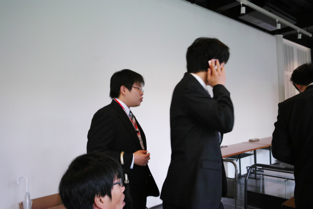
キャンパス外の誘導員と連絡中 |
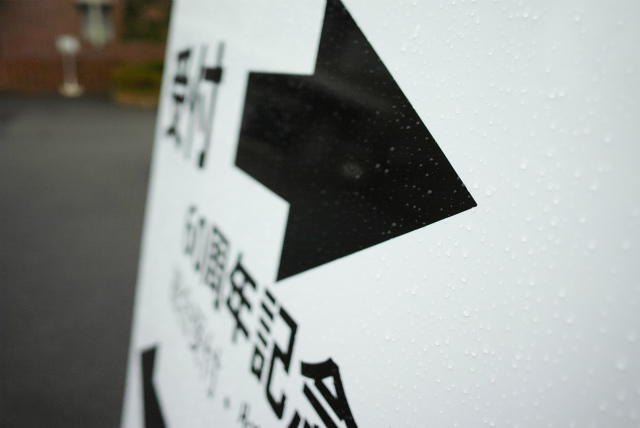
明け方に強い雨が降りました | ||
|
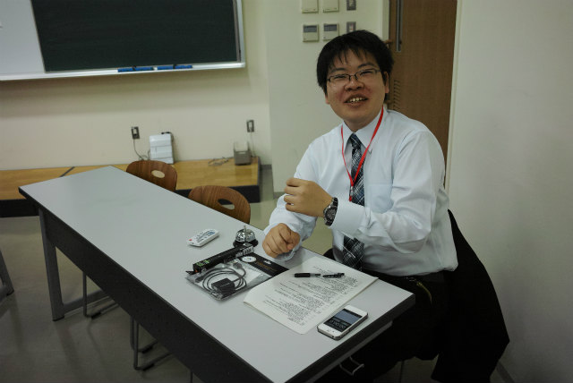
B4のF井くんは終日タイムキーパー |
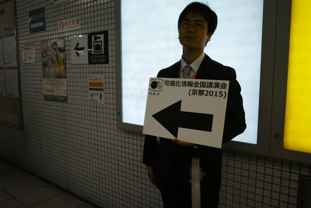
改札のB4Y岡くん．TNくんとK保西くんは地上 | ||
|
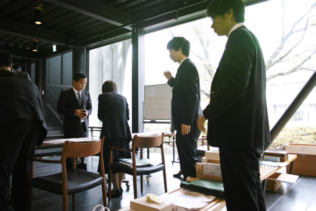
最終的に200人越えの参加 |
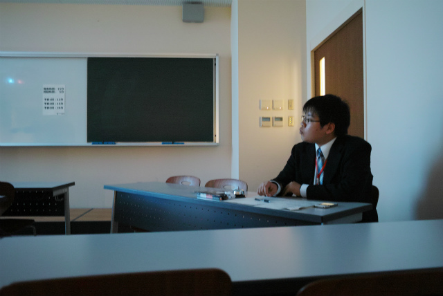
タイムキーパー中 | ||
|
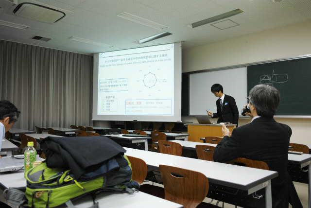
Shogoの危なげない発表 |
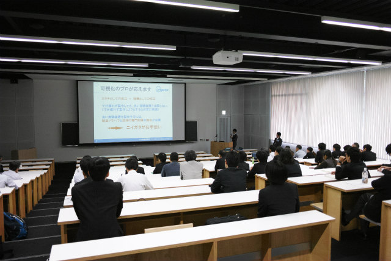
参加企業様の技術プレゼン | ||
|
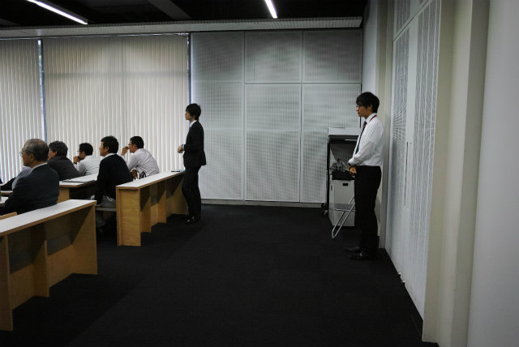
M1のTMくん |
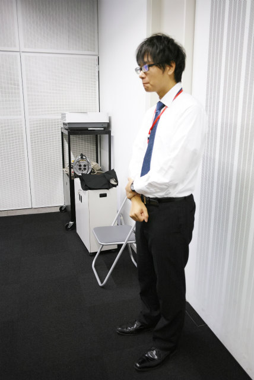
静まれオレの右手，ではなく正式な待機 | ||
|
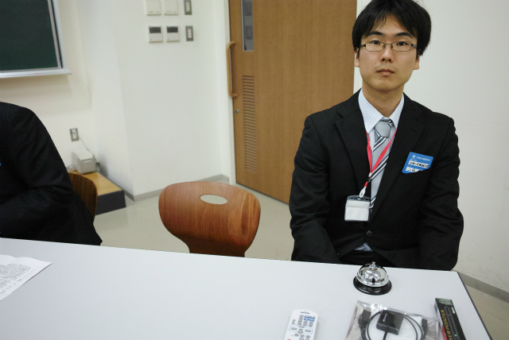
改札の次はタイムキーパー |
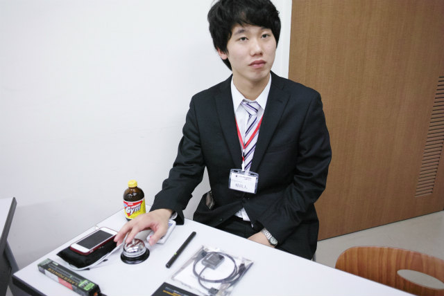
B4のKNくんは午後からタイムキーパー | ||
|
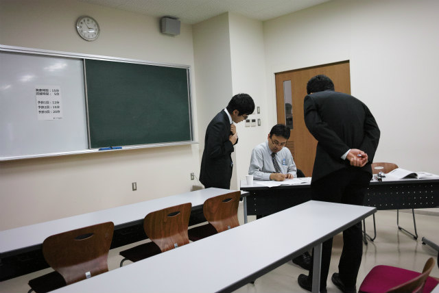
マイペースなふたり |
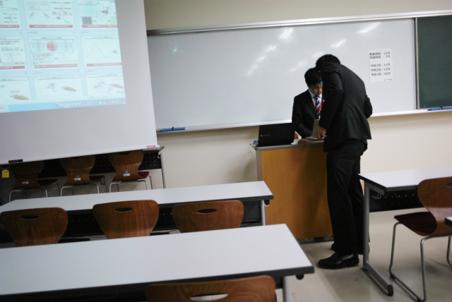
30分前には来てね | ||
|
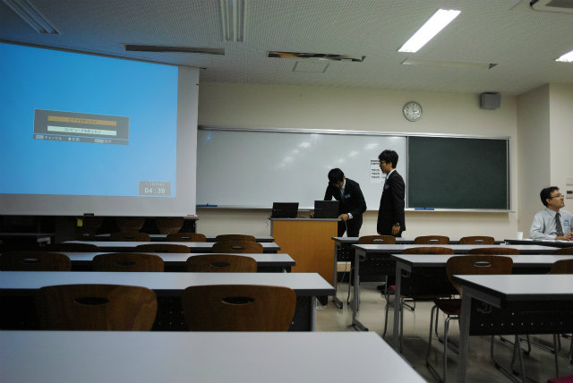
PCの動作確認 |
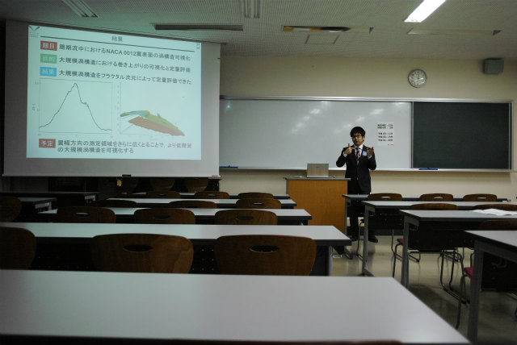
質疑は良かったB4のH谷川くん | ||
|
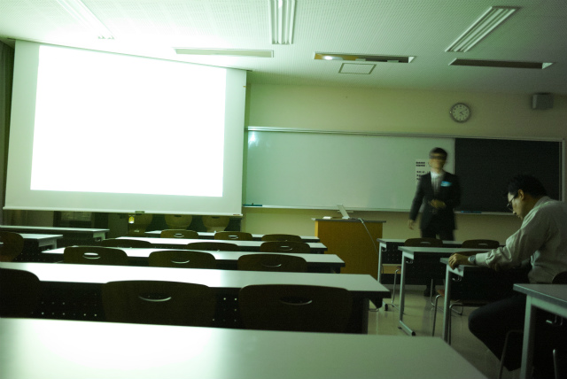
来月2回発表があるM1のY西くん |
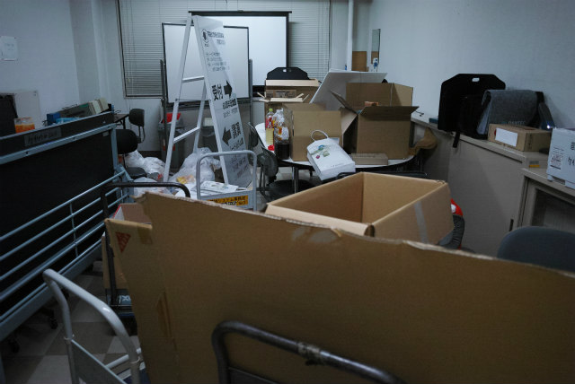
光速の撤収，計測研は逃げ足早い とりあえずFの部屋に運び込み | ||